遊客注意事項
Precautions
- 澎湖南方四島國家公園範圍內各島嶼資源有限，請遊客珍惜各項資源，並隨手將垃圾帶離島上，避免增加島嶼負擔。
- 西吉嶼、頭巾、鐵砧及東吉嶼(部分區域)於民國97年公告成為澎湖南海玄武岩自然保留區，須向澎湖縣政府農漁局申請，經審核通過方能前往。
- 請行走在既有的路徑上，避免任意走出新的路徑，減少破壞的面積。
- 尊重當地居民及風俗信仰，不任意進入、毀損民宅。
- 降低音量，避免干擾當地居民及生物。
- 不撿拾貝類、珊瑚、寄居蟹等潮間帶生物。
- 注意自身安全，觀賞地景時小心懸崖落石，行走時請勿離開步道，並留意蛇類等生物出沒。
- 以欣賞代替佔有、以攝影代替摘取、以足跡代替刻字、以體驗代替破壞。
- 遵守國家公園法之相關規定。
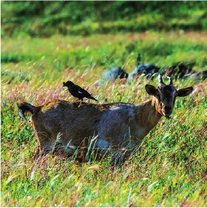
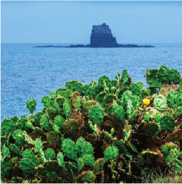
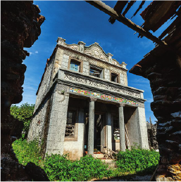
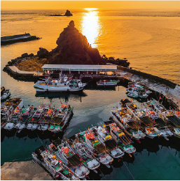
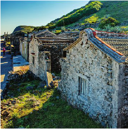
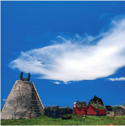
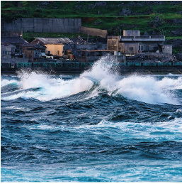
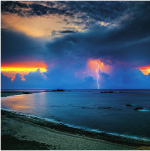
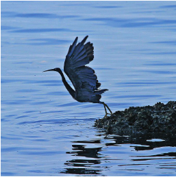
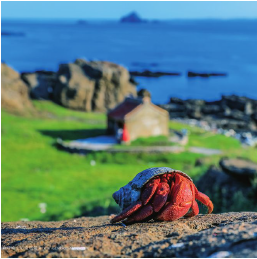
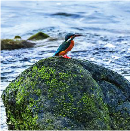
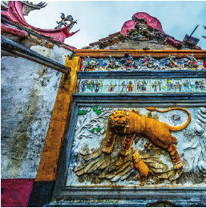